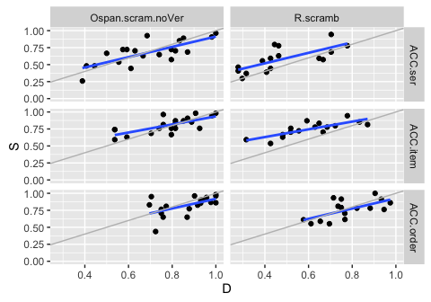
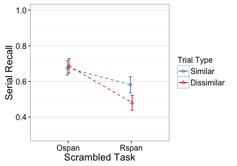
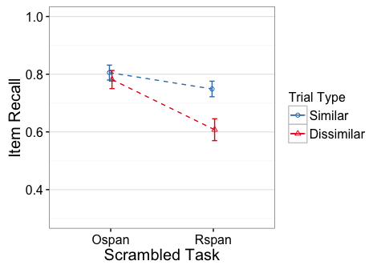
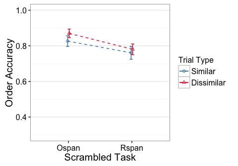

e2 - R.scramb, Ospan.scram.noVer
library(knitr)
opts_knit$set(self.contained=TRUE, root.dir="../")
opts_chunk$set(fig.cap="", error=TRUE, cache=FALSE, echo=FALSE)#, fig.width=5, fig.height=3.5)
Descriptives
N
## task trialtype Participants
## 1 Ospan.scram.noVer D 20
## 2 Ospan.scram.noVer S 20
## 3 R.scramb D 16
## 4 R.scramb S 16
Residual Check
Scatterplots of Similar vs Dissimilar

gray line has intercept=0, slope=1. Blue line is regression fit.
Averaged across similarity conditions (and z-scored)

Effect Plots
Standard errors are between group
  
ACC.ser
Error: Unique_ID
Df Sum Sq Mean Sq F value Pr(>F)
task 1 0.4043 0.4043 7.373 0.0103 *
Residuals 34 1.8646 0.0548
---
Signif. codes: 0 '***' 0.001 '**' 0.01 '*' 0.05 '.' 0.1 ' ' 1
Error: Unique_ID:trialtype
Df Sum Sq Mean Sq F value Pr(>F)
trialtype 1 0.02679 0.02679 3.207 0.0822 .
task:trialtype 1 0.05556 0.05556 6.649 0.0144 *
Residuals 34 0.28408 0.00836
---
Signif. codes: 0 '***' 0.001 '**' 0.01 '*' 0.05 '.' 0.1 ' ' 1
Partial Eta-square
eta.2
task 0.17820538
trialtype 0.08618372
task:trialtype 0.16358071
Simple Effects
Ospan
Error: Unique_ID
Df Sum Sq Mean Sq F value Pr(>F)
Residuals 19 1.088 0.05726
Error: Unique_ID:trialtype
Df Sum Sq Mean Sq F value Pr(>F)
trialtype 1 0.00123 0.001235 0.157 0.697
Residuals 19 0.14966 0.007877
eta.2
trialtype 0.008181818
Rspan
Error: Unique_ID
Df Sum Sq Mean Sq F value Pr(>F)
Residuals 15 0.7767 0.05178
Error: Unique_ID:trialtype
Df Sum Sq Mean Sq F value Pr(>F)
trialtype 1 0.08111 0.08111 9.052 0.00882 **
Residuals 15 0.13442 0.00896
---
Signif. codes: 0 '***' 0.001 '**' 0.01 '*' 0.05 '.' 0.1 ' ' 1
eta.2
trialtype 0.3763425
ACC.item
Error: Unique_ID
Df Sum Sq Mean Sq F value Pr(>F)
task 1 0.2362 0.23625 8.089 0.00749 **
Residuals 34 0.9930 0.02921
---
Signif. codes: 0 '***' 0.001 '**' 0.01 '*' 0.05 '.' 0.1 ' ' 1
Error: Unique_ID:trialtype
Df Sum Sq Mean Sq F value Pr(>F)
trialtype 1 0.10433 0.10433 22.84 3.32e-05 ***
task:trialtype 1 0.06097 0.06097 13.35 0.000864 ***
Residuals 34 0.15534 0.00457
---
Signif. codes: 0 '***' 0.001 '**' 0.01 '*' 0.05 '.' 0.1 ' ' 1
Partial Eta-square
eta.2
task 0.1921886
trialtype 0.4017741
task:trialtype 0.2818786
Simple Effects
Ospan
Error: Unique_ID
Df Sum Sq Mean Sq F value Pr(>F)
Residuals 19 0.5391 0.02838
Error: Unique_ID:trialtype
Df Sum Sq Mean Sq F value Pr(>F)
trialtype 1 0.00580 0.005796 1.198 0.287
Residuals 19 0.09194 0.004839
eta.2
trialtype 0.05929825
Rspan
Error: Unique_ID
Df Sum Sq Mean Sq F value Pr(>F)
Residuals 15 0.4539 0.03026
Error: Unique_ID:trialtype
Df Sum Sq Mean Sq F value Pr(>F)
trialtype 1 0.1595 0.15951 37.74 1.88e-05 ***
Residuals 15 0.0634 0.00423
---
Signif. codes: 0 '***' 0.001 '**' 0.01 '*' 0.05 '.' 0.1 ' ' 1
eta.2
trialtype 0.7155769
ACC.order
Error: Unique_ID
Df Sum Sq Mean Sq F value Pr(>F)
task 1 0.1076 0.1076 4.219 0.0477 *
Residuals 34 0.8672 0.0255
---
Signif. codes: 0 '***' 0.001 '**' 0.01 '*' 0.05 '.' 0.1 ' ' 1
Error: Unique_ID:trialtype
Df Sum Sq Mean Sq F value Pr(>F)
trialtype 1 0.01939 0.019393 2.910 0.0972 .
task:trialtype 1 0.00251 0.002511 0.377 0.5435
Residuals 34 0.22661 0.006665
---
Signif. codes: 0 '***' 0.001 '**' 0.01 '*' 0.05 '.' 0.1 ' ' 1
Partial Eta-square
eta.2
task 0.11038386
trialtype 0.07883231
task:trialtype 0.01095812
Simple Effects
Ospan
Error: Unique_ID
Df Sum Sq Mean Sq F value Pr(>F)
Residuals 19 0.4382 0.02306
Error: Unique_ID:trialtype
Df Sum Sq Mean Sq F value Pr(>F)
trialtype 1 0.01882 0.018825 2.831 0.109
Residuals 19 0.12633 0.006649
eta.2
trialtype 0.1296882
Rspan
Error: Unique_ID
Df Sum Sq Mean Sq F value Pr(>F)
Residuals 15 0.429 0.0286
Error: Unique_ID:trialtype
Df Sum Sq Mean Sq F value Pr(>F)
trialtype 1 0.00308 0.003079 0.461 0.508
Residuals 15 0.10029 0.006686
eta.2
trialtype 0.02979128